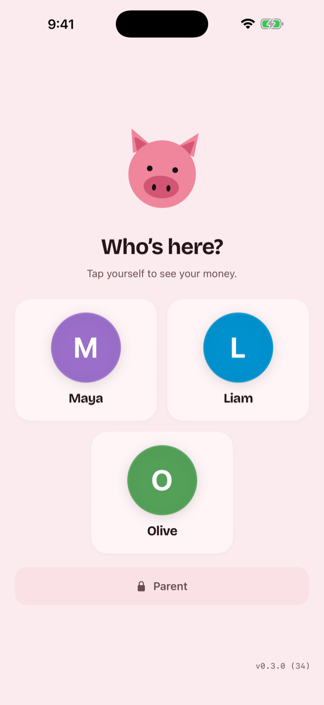

The piggy bank,
all grown up.
Chores, allowance, and goals — in one happy little app.
For iPhone and iPad.
A tracker, not a bank — parents hand over the real money.
See how it worksComing to the App Store.



Money that means something
The chore chart on the fridge and the jar on the shelf — kept honest by a ledger that can't be fudged, and a parent who approves every penny.
- Chores that payKids check things off the list and earn real dollars. You approve, the money lands.
- Weekly allowance, automaticPick an amount and a day. Pig Pal drops it in their balance without you lifting a finger.
- Goals worth saving forSet a target — a new toy, a game, a bike. Watch the balance fill the bar.
- Rewards that aren't moneyA day out for a month of chores. Pooled between them, or each on their own.
- Both parents, in stepPrivate iCloud sync. Approve on your phone and it's already done on theirs.
- A device each, or one to shareHand a kid a phone and it opens to their screen and nowhere else. The family iPad asks who's here.

Not everything has a price
Some things shouldn't come out of pocket money. Set a reward and the number of chores that unlocks it — a day out, a film night, picking what's for dinner on Friday.
Pool it, and sixty chores between them gets the whole lot to Six Flags. Or set it each, and every kid works their own four.
Not a bank
Pig Pal is a tracker, not a bank. It doesn't hold money, move money, connect to an account, or issue a card.
When a chore is approved or allowance lands, nothing happens in the world — a number in the app goes up. The real money is handed over by the parent, whenever and however they already do it: cash, a transfer, a trip to the shop.
A balance here is a shared record of what a grown-up has decided they owe, so the two of you stop arguing about what was agreed three weeks ago.
Privacy, honestly
Pig Pal collects nothing. There's no Pig Pal account, no Pig Pal server, and no analytics or advertising code anywhere in the app.
Your family's data stays on your devices. Turn on sync and it goes to your iCloud, where we can't reach it — not to us.
Read the full policy — it's one short page.